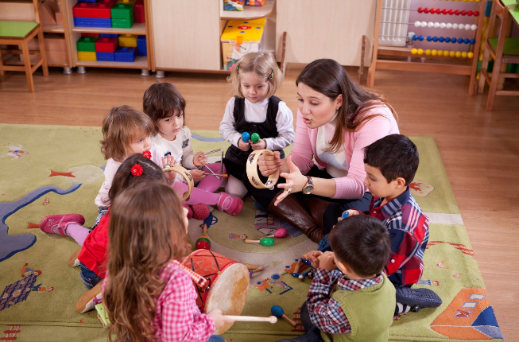

Aula 4 dia 03/02/22: Relação com as famílias e a docência na EI

Relação com as famílias e a docência na EI
A aula iniciou primeiramente com um pequeno vídeo no qual a
professora Amanda (professora da educação infantil de alunos
entre 3 e 4 anos), graduada em 2019, aluna de mestrado da
professora Cristina nos contou como foram suas experiências em
sala de aula, como foi o processo de sair da universidade e ir
para o mercado de trabalho e como é importante e fundamental a
parceria escola-família;
A professora Amanda nos falou sobre como é desenvolvido o
planejamento, é importante conhecer as crianças, observar suas
necessidades e que baseado também na BNCC;
É necessário estruturar uma rotina, de modo a contemplar a
aproximação da criança ao mundo letrado, contemplar a oralidade;
Como já diria Paulo Freire em sua obra de título “Professora
sim, tia não!,” professor não é parente.
Paulo Freire (1997) afirma que “a tarefa de ensinar” não deve
transformar “a professora em tia de seus alunos da mesma forma
como uma tia qualquer não se converte em professora de seus
sobrinhos só por ser tia deles. Ensinar é profissão que envolve
certa tarefa, certa militância, certa especificidade no seu
cumprimento enquanto ser tia é viver uma relação de parentesco”.
O professor exerce um papel primordial na formação dos cidadãos
conscientes e responsáveis, pois além de atuar como gestor da
aprendizagem ele promove valores fundamentais para a inserção de
crianças no meio social, portanto é necessário um cuidar, mas
também é preciso o educar.